Software Engineering
SCC. 110: Software Development
C: Introduction
Storing variables

Declaring arrays
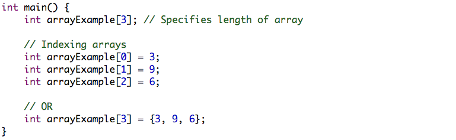
C: Loops and Conditions
Variations of loops
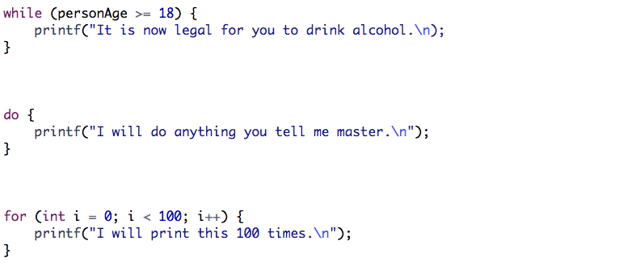
Termination
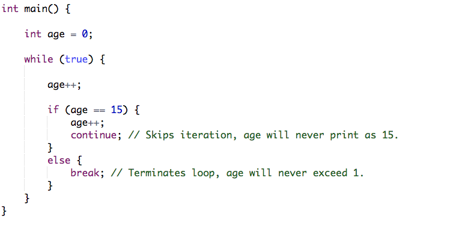
C: Input
Scanf function
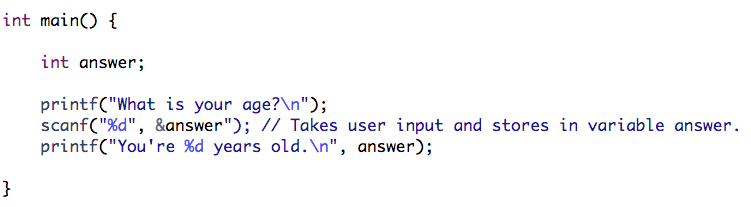
C: Functions
Template of function
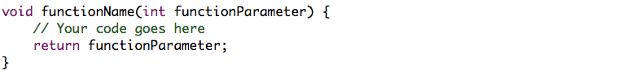
Example
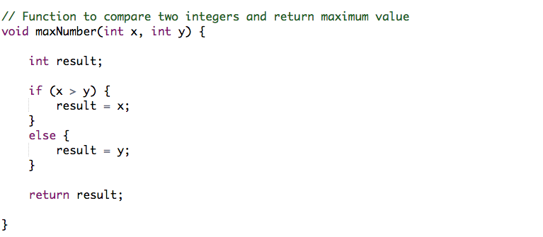
C: Pointers
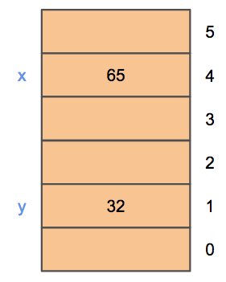
Overview
- When you declare a variable you are setting aside space to store information of specific type and labelling that space.
- Each space has its own address, we can point to that address using a pointer. 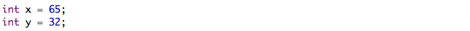
Indirection
- Using something that is using something else → e.g. if you would like to send a letter to someone, you never interact with the last component. You would do the following:
- Push the envelope into a postbox.
- Postman collects the envelope from the postbox.
- Envelope is processed through the system until finally reaching the recipient.
- In programming it could be: int *p = &x
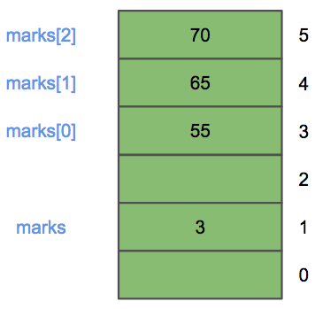
Array pointers
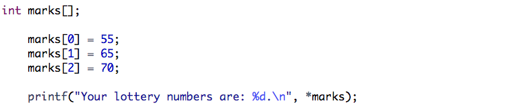
Pointer applications
- We can modify inputs to functions.
- Efficient to pass pointer to data into functions.
- We can use pointers to iterate through data.
- We can create our own efficient data structures.
C: Strings
Overview
- Strings are text or sequences of characters.
- Useful representing textual data e.g. text editors, files, web pages.
- Key to searching, sorting and processing data.
- However, poor string handling can lead to cyber attacks e.g. array that has an overflow allows malicious code to be injected into memory and potentially executed.
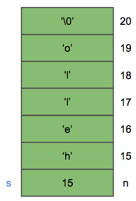
String example
- Strings will always be stored in order with a terminating character ‘\0’ at the end of each string.
- Use this to an advantage to scan through strings i.e. != ‘\0’
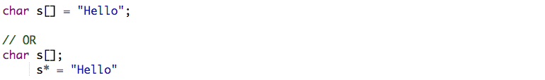
Comparing strings
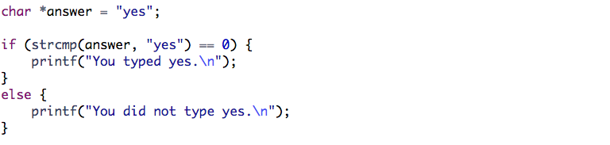
C: Dynamic memory
Overview
- Allocate memory when needed while program runs.
- Larger amount of storage than static.
- Can create dynamic data structures i.e. increases in size when running low on space.
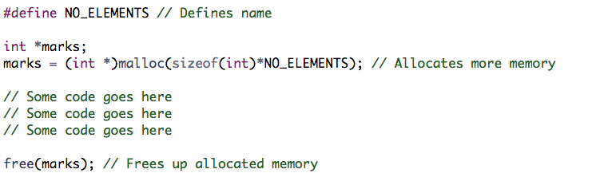
Structs
- User defined grouping of variables, able to then use in our code for easy access.
- Similar to classes in object-oriented languages.
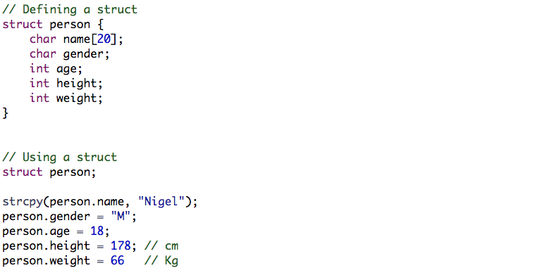
C: Debugging and common mistakes
Simple tests
- Does it work for simple tests.
- Does it work for all possible inputs.
- Does it work for boundary input cases.
Black Box Testing | White Box Testing |
- Details are not known by the tester
- Gives more realistic information
- User may not understand purpose
| - Details are known by the tester
- User knows how to use program
- Gives less realistic information
|
Common mistakes
- Semi-fucking-colon
- Impossible loops i.e. i > 10 || i < 10
- Comparisons i.e. =, !=, ==
- Invalid use Scanf i.e. ‘&i’ NOT ‘i’
- Accessing invalid array arguments
- Assuming initial values i.e. for (int i; i < 10; i++);
Debugging techniques
- Static analysis: Manually working through source code from point of defect.
- Divide and conquer: Divide software into suspect parts and other parts which you deduce are not causing a defect.
- Tracing: Using print statements to pint information as program executes.
Java: Introduction
Hello World!

boolean | True, False |
byte | 8 bit signed integer |
short | 16 bit signed integer |
int | 32 bit signed integer |
long | 64 bit signed integer |
float | 32 bit floating point number |
double | 64 bit floating point number |
char | Unicode character |
void | No type |
Strings
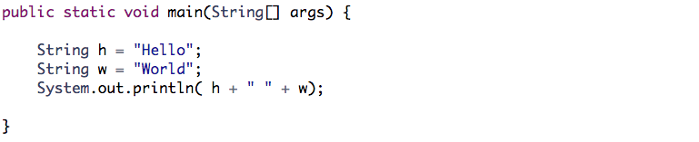
Comparisons
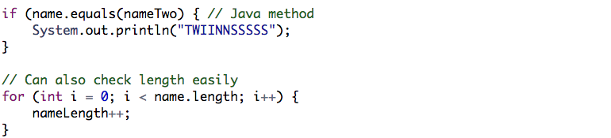
Java: Principles of Object-oriented languages
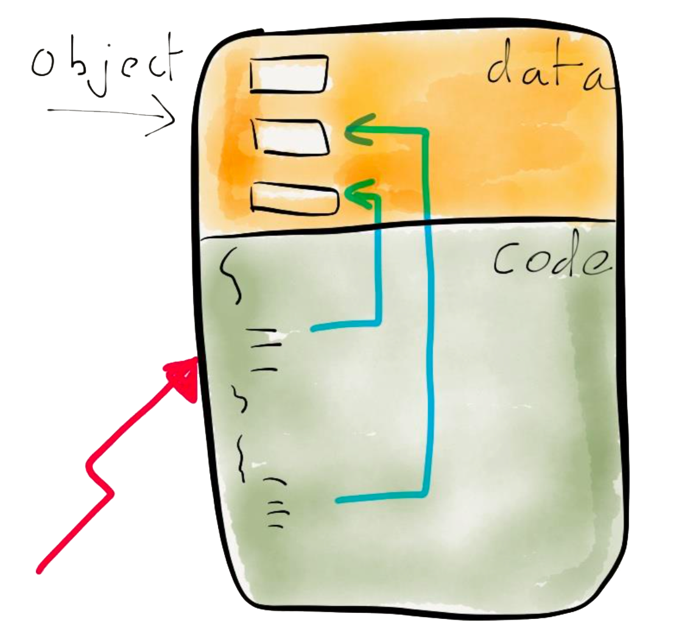
Overview
- Procedural programming languages treat code and data as separate concepts.
- Object oriented language combine them i.e. they can’t be separated.
- Data is defined through attributes.
- Behaviour is defined through methods.
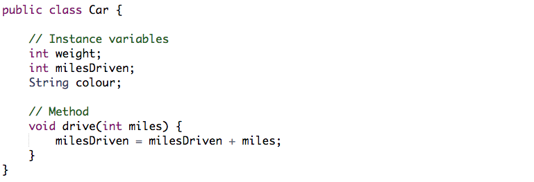
Classes

Java: Encapsulation
Example of Encapsulation
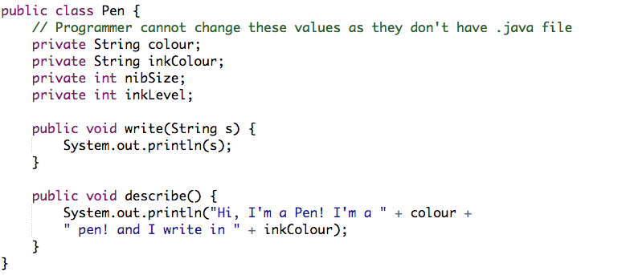
Access control
- Get: Accessor methods wrap access to private instance variables, named after the variable they relate to. Declared in public without parameters and return only the value of the variable.
- Set: Mutator methods change value of private instance variables, they take single parameter of the same type as variable. They set the value and have no return value.
Constructor
- Provides way to initialise values of object’s instance variables to consistent state.
- Constructors look like all other methods but with no return type.
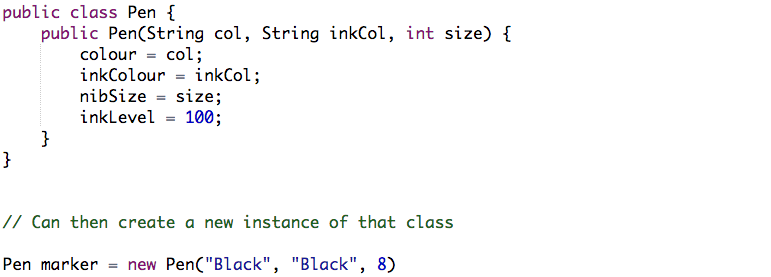
Java: Swing
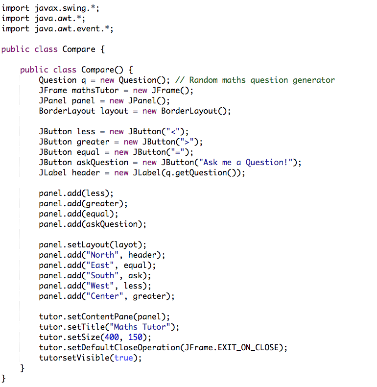
BUG: Version Control Systems
VCS Implementations: Subversion (SVN)
- Centralised model - creates large repository sizes as it branches and tags clone files wholesale.
- If you want local copy you must copy and paste it onto your machine, requires internet in order to develop.
- Has easy to use GUI in order to help with management.
VCS Implementations: Git
- New copies referred to as clones where branches handled by references.
git init | Create new repository |
git clone | Clone a remote repository |
git add | Add files to the staging area |
git commit | Commit your changes to the repository |
git push | Put new changes to a remote repository |
git pull | Get most recent copy from master server |
git branch | Create and view branches |
git merge | Merge one branch in to another |
git checkout | Switch to another branch |
BUG: Debugging and IDE
Debugging
- Concerned with finding deviations from a program’s expected behaviour as stated in its specification (defect) e.g. undesirable system behaviour, incorrect computations.
- Debugging is a consequence of successful testing and removing defects.
Integrated Development Environment (IDE)
- Software that provides set of tools to computer programmers for development.
- Interactive debugging tools exist which can help trace through program e.g. step line by line, examine variable values and set breakpoints to pause program.
Debugging Techniques |
Static analysis | Manually working through source code from point defect is manifested back to its cause. |
Divide and conquer | Diving software into suspect parts and other parts which you deduce are not causing a defect. |
Tracing | Print statements as program executes e.g. paths taken, values of variables, object states. |
Asking others | Simply describing is usually enough, but fresh eyes always help. |
BUG: Testing
Overview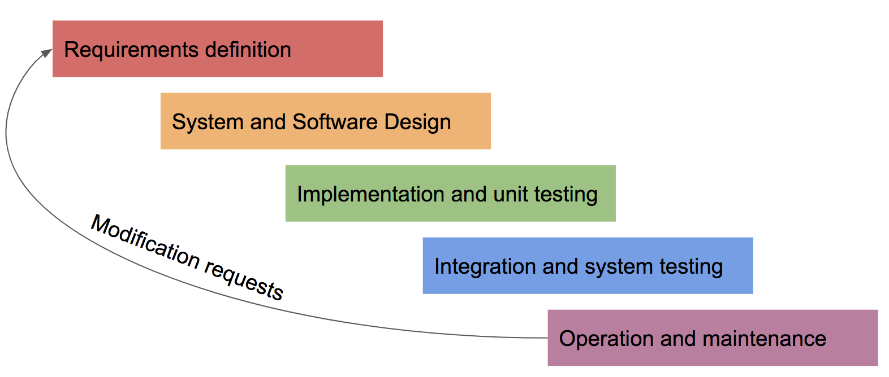
- Validation testing → Test cases correspond to intended use of software, expect system to operate as intended.
- Defect testing → Test cases should expose defects, including obscure inputs, not correspond to intended i.e. break the motherfucker.
Black-box testing
- Studying program’s inputs and related outputs, any unexpected output reveals defect.
- Test cases are derived from program specification where internal workings of program not known to tester.
Equivalence Partitioning
- Systematic technique for identifying defects - set of input values for which program should behave in comparable way.
- Create partition for every possible outcome in a program and thus determine values.
Writing test cases
Test ID | Description | Input | Expect Output |
1 | Test using valid integer | 9 |
|
2 | Test using large integer | 2.2*1010 |
|
3 | Test with no input |
|
|
Test cases: Advantages
- New perspective on a problem → when done before design and coding.
- Repeatable test cases → can be rerun to reproduce defects and retest code.
- Other can run your test cases → effective way of adding personnel to project.
- Easy to validate quality → should visit all parts of program and cover normal, abnormal and boundary cases.
White-box testing (glass-box)
- Method for finding test cases using knowledge of program’s internal workings.
- Contrasts black-box which is based on externally observable program behaviour.
- Path Testing
- Cause every statement in program to be executed at least once.
- Exercise all logical conditions on their and true and false outcomes.
- Program flow graph
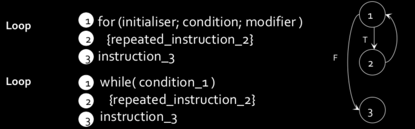
- Cyclomatic complexity V(G)
- V(G) = E - N + 2 where E is the number of arcs (edges) and N is number of nodes.
- CC value equals number of independent paths through a system, each new path introduces at least one new statement or condition.
- The higher complexity, the more difficult the program is to understand, maintain and test.
- Constructing set of independent paths
- Start with baseline path (shortest) that vary exactly 1 decision outcome, repeat until all decision outcomes have been varied.
- Prepare test cases
- Create test case for each path, defining input values for keys and sequence.
Examples of failure
- Mars Climate Orbiter → Crashed due to one team using Metric, other using Imperial
- Heathrow Terminal 5 → Real world scenarios such as removing a bag mid-transit were never tested.
BUG: Error Handling
Exceptions: try/catch
- Try surrounds block of code which may cause an exception.
- Catch defines the code that is executed in the event an exception is raised.
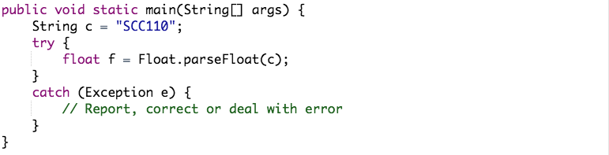
Exceptions: finally
- Finally surrounds block of code that you want to run unconditionally after try/catch.
- Typically used to allow cleanup operations in the event of exceptions being thrown.
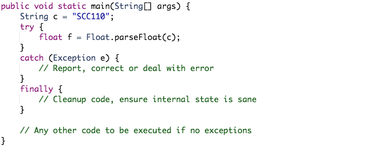
Throwing Exceptions
- Created explicitly by programmers, mechanism for transferring responsibility for unusual occurrences.
- Ability to pass responsibility using throws e.g. throws IOException, handle at end.
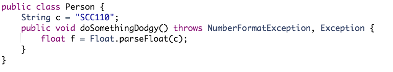